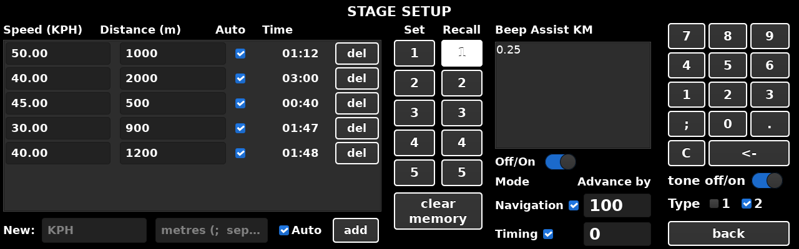

If there are existing speeds and distances shown, press del
beside each line first.
Auto for the box to change to the next speed by itself at
the end of the leg. Leave it clear to change speed by pressing
next.add and the entered information will populate the
table.Several legs can be entered at once by separating the figures with
semicolons, e.g. 30;40 with 1000;2000 adds 1000 m at
30, then 2000 m at 40.
The table shows each leg with the time it should take. In a dual display configuration the total distance as well as the interim distances of the current loaded stage will show in the co-driver main window.
Pressing Set 1 to 5 will save the stage on screen into that
memory for later use, and you will be asked to confirm that you want to
overwrite the memory slot if it is in use. The corresponding Recall button will
invert colours. Recall 1 to 5 loads it back into current memory and
displays the details.
Pressing this will clear all saved stages after confirmation. It does not delete the current stage information, which stays on the screen.
The driver's aural error tones can be enabled or disabled using the
tone off/on switch. Type 1 pulses faster the larger the correction
needed. Type 2 is a continuous tone whose pitch follows the seconds of
error.
Beep Assist is an aural navigation assistant which gives warnings ahead of upcoming navigations and alerts to identify measured distance inaccuracies.
The total roadbook elapsed distance at each box in a stage should be entered into the top entry field (not the distance between each box) and this will be saved and recalled alongside the stage speeds and distance information.
Beep Assist can be disabled using the Off/On switch. If it is
enabled, the respective Navigation and Timing tick boxes need to be checked for
it to sound. The advance configurations (metres and seconds) do not get saved
and recalled.
back returns to the main screen.